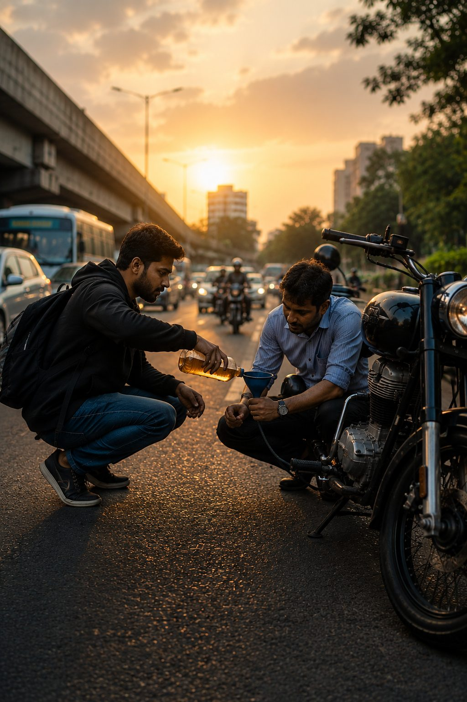

The Man I Never Knew

Back in 2016, I had just returned to India after several years in the United States. I was still getting used to Hyderabad's traffic, riding a bike every day, and managing life all over again. One morning, I was rushing to the office for an important meeting.
Halfway through my journey...
my Royal Enfield came to a stop.
The fuel tank was empty. There wasn't a petrol station nearby.
There I was...
standing in the middle of the road, dressed for the office, already running late, wondering how I was going to push that heavy bike to the next fuel station.
Hundreds of vehicles passed by. Everyone had somewhere to be. Then, out of nowhere, one young man stopped. He asked what had happened. Without saying much, he took a small amount of petrol from his own bike and poured it into mine.
"It'll be enough to get you to the next petrol station," he smiled.
Before I could even think of offering him money...
he started his bike...
and quietly rode away.
I never knew his name. I never saw him again.
But even after all these years...
I still remember him.
That incident often comes back to me. The people who leave the deepest mark on our lives aren't always our closest friends or family.
Sometimes...
they're complete strangers who simply choose not to walk past our pain.
They notice.
They stop.
They help.
And then they quietly move on.
No applause.
No recognition.
Just kindness.
In a world where all of us are busy...
where it's easy to assume someone else will help...
I wonder...
Have I ever become that unexpected answer to someone else's difficult day?
Or have I become so occupied with my own schedule...
that I no longer notice the people quietly struggling around me?
Whose difficult day can become a little lighter...
simply because I chose to stop today?
Years from now...
will someone remember me...
the way I still remember that young man?